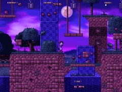
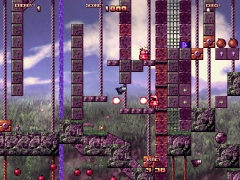
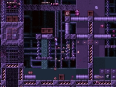
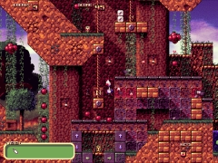
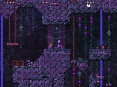
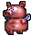

| about | games | forum | discord | blog | links |
|
||||||||||||||||||||||||||||||||||||||||||||||||||||||||||||||||||||||||||||||||||||||||||||||||||||||||||||||||||||
 Pekka Kana 2 v1.2
(2003-2007)
Pekka Kana 2 v1.2
(2003-2007)
 |
  |
|
Janne
Kivilahti |
 PK2
v1.21
Installer
(6.6 MB) PK2
v1.21
Installer
(Mirror) Editor 0.91
Installer (600 KB) PK2
v1.21
Installer
(6.6 MB) PK2
v1.21
Installer
(Mirror) Editor 0.91
Installer (600 KB) |
  |
 |
|
Pekka
Kana 2 (Pekka the Rooster 2) is a jump 'n run game made in the spirit
of old classic platformers such as Super Mario, Sonic the Hedgehog,
Jazz Jackrabbit, Super Frog and so on. The simple goal in each level is to find the exit sign, which is usually not that simple as it sounds because of enemies, traps, and quirky puzzles. Pekka Kana 2 was released in year 2003 at Assembly '03 Game Development Competition, and placed 2nd. Since then the game has been featured in numerous different sites and cover discs. Players have also made their own levels with the PK2 Level Editor, which was released later in 2003. Check the link section at the bottom of the page for more information. Pekka Kana 2 has also been translated to several languages, and you can download the language files and manuals from the bottom of this page. The installer includes episodes Rooster Island 1 and Rooster Island 2, and a huge amount of translations. So install the game first, and download a translation if it doesn't come with the game. Unfortunately because the game is quite old and uses old version of DirectX (7), many experience problems when trying to run the game on modern OSs like Windows Vista and graphics cards that don't support all of Direct 7's old 2D features. Recommended setup for PK2 is Windows 98 and an old graphics card. |
      |
  |
|
 For 1 player 2 episodes, 24 levels
Lots of enemies and bonuses Transforms to other
animals
Many fun, original songs
Translations to 25 languages
Gamepad support
For 1 player 2 episodes, 24 levels
Lots of enemies and bonuses Transforms to other
animals
Many fun, original songs
Translations to 25 languages
Gamepad support
|
|
  |
|
 Windows XP
DirectX 9
20 MB hard disk space
30 MB system memory
Windows XP
DirectX 9
20 MB hard disk space
30 MB system memory |
|
  |
|
 English manual Level
Editor manual PK2Lib
(new episodes!) Map
Store (older user made episodes) Pekka Kana 2 Forum Thread Pekka Kana 2 at Computer Bild English manual Level
Editor manual PK2Lib
(new episodes!) Map
Store (older user made episodes) Pekka Kana 2 Forum Thread Pekka Kana 2 at Computer Bild |
| Game Translations | |
| Right click on the link and choose "Save Target As...". Save the file to game's language folder (eg. "C:\Games\PK2\language"). | |
| Language file | Author |
| Bulgarian | Iv4n |
| Catalan | Jordi Bellmunt Morera |
| Czech version 1 | Tomas Macek |
| Czech version 2 | Petr Kyrian |
| Croatian | Igor Stojanovic |
| Danish | Drake1009 |
| Finnish (Savo) | Tero Komulainen |
| Finnish (Slangi) | Heikki Salko |
| Finnish (Tervola) | Jorma Hurtig |
| French version 1 | Thierry Septembre |
| French version 2 | Bruno H. Frappreau |
| Galician | Anxo Pazos |
| German version 1 | Rene Clobes |
| German version 2 | Sebastian Sch�ngen |
| German version 3 | www.demonews.de |
| Hungarian | N�meth 'FooLman' G�bor |
| Indonesian | William Surya Permana |
| Italian version 1 | Sergio Giustri |
| Italian version 2 | Jack Torrone |
| Italian version 3 | Accardo Ernesto |
| Italian version 4 | Dario Cassina |
| Italian version 5 | Pasqua Francesco |
| Italian version 6 | Omar Luciani |
| Macedonian | Dejan Aleksov |
| Netherlands | Wessel Bakker |
| Polish version 1 | Rafal Machowski |
| Polish version 2 | Victory Games |
| Portuquese (Brazil) | Alexandre Cury |
| Russian version 1 | Axeon |
| Russian version 2 | Ivanov Nikolay |
| Serbian | Lidija Jankovic |
| Slovenian | Andrej Mernik aka. R33D3M33R |
| Slovak | Anton Praznovsky |
| Spanish (Castellano) | Julio Diaz |
| Spanish version 2 | Jos� A. Malv�rez |
| Spanish version 3 | Oscar Carballal |
| Swedish | Mattias Andersson |
| Manual Translations | |
| Right click on the link and choose "Save Target As...". Save the file to game's folder (eg. "C:\Games\PK2"). | |
| Language file | Author |
| Danish | Drake1009 |
| Dutch | Marnix Amperse |
| German | Bernd Schulze |
| Italian version 1 | Daniele Stifani |
| Italian version 2 | Omar Luciani |
| Polish | Victory Games |
| Indonesian | William Surya Permana |


| www.pistegamez.net | all material on this site is copyrighted |